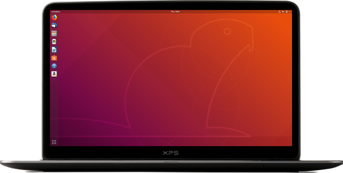

Linus Torvalds
.jpg)
Linus Torvalds nació el 28 de diciembre de 1969 en Helsinki, Finlandia. Pertenece a la comunidad sueco-parlante de Finalndia. Es un ingeniero de software conocido principalmente por ser el creador del núcleo Linux.

Él comenzó a programar a la edad de 10 años, usando la Commodore VIC-20 de su abuelo. En 1991, cuando era estudiante de ciencias de la computación, adquirió su primer PC, pero no estaba satisfecho con su sistema operativo. Su PC usaba MS-DOS, pero preferia el sistema operativo UNIX que había usado en las computadoras de la universidad. Debido a esto, Linus decidió crear su propio UNIX para PC, basandose en el sistema operativo libre Minix, creado por el profesor Andrew S. Tanenbaum.

Creó su sistema utilizando el lenguaje C, utilizando el compilador GCC (GNU Compiler Collection) del proyecto GNU. Su objetivo inicial era crear un emulador de terminal para PC, pero debido a las necesidades que se fueron presentando, se dio cuenta de que su proyecto se estaba convirtiendo en algo más que un emulador de terminal. Decidio crear su sistema operativo desde cero.
En 1991, Linus envió un mensaje a la red preguntando a los usuarios de Minix que les gustaría que tuviera el sistema operativo que estaba creando. Asimismo, describio su proyecto como un hobby, nada grande.
Torvalds puso su software disponible para descarga y además lanzó el código fuente, permitiendo que cualquiera con conocimientos en programación pudiera adaptar el sistema a sus necesidades. Este hecho hizo que muchos comenzaran a contribuir al desarrollo del sistema. En 1993, gracias a la ayuda de la comunidad, se lanzo el kernel Linux en su versión 1.0.
En la actualidad, el núcleo Linux es utilizado en muchas áreas, cómo servidores, smartphones, supercomputadoras y el escritorio. El escritorio es un área donde no ha tenido tanto éxito como Microsoft Windows o Apple MacOs (antes Mac OSX), esto debido a que hay muy pocos fabricantes que preinstalen sistemas operativos que utilicen el núcleo Linux, y a los clientes no les gusta instalar un sistema operativo. No pasa lo mismo en el área de los móviles, donde Android, el sistema operativo móvil más usado (le sigue iOS de Apple), tiene el núcleo de Linux. En el área de los servidores y la supercomputación, Linux definitivamente es el rey.

Algunos sistemas operativos y/o distribuciones que tienen el núcleo Linux
Muchos confunden Linux con GNU/Linux. Hay sistemas operativos que no utilizan las herramientas de GNU y sin embargo utilizan el núcleo Linux. Cuando un sistema utiliza el núcleo Linux y las herramientas de GNU, tradicionalmente se le conoce como distribución (o distro) GNU/Linux.
- Android: Es un sistema operativo móvil que tiene el núcleo Linux.
- Ubuntu: Es una distribución GNU/Linux que destaca por ser la distribución GNU/Linux más fácil de usar. Es a su vez el tercer sistema operativo de escritorio más usado.

Linux y los servidores de Internet
El núcleo Linux está presente prácticamente en el 100% de los servidores del mundo.
Actualmente, Linus Torvalds trabaja en la Fundación Linux (The Linux Foundation). Es el encargado de revisar todos los cambios en el núcleo Linux y aprobar las versiones.
Se dice que ya no participa tan activamente en el desarrollo de Linux, pues la comunidad hace todo el trabajo. Esto es importante para él porque cree que la comunidad estará preparada si en el futuro él se llegara a retirar o morir.